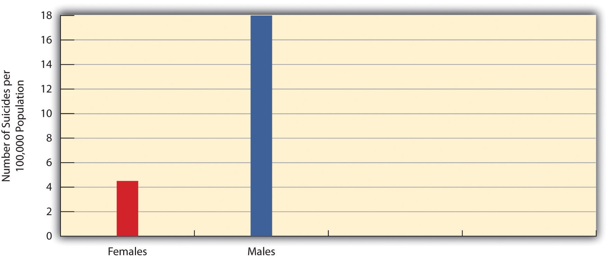

Most Americans probably agree that we enjoy a great amount of freedom. And yet perhaps we have less freedom than we think, because many of our choices are influenced by our society in ways we do not even realize. Perhaps we are not as distinctively individualistic as we believe we are.
For example, consider the right to vote. The secret ballot is one of the most cherished principles of American democracy. We vote in secret so that our choice of a candidate is made freely and without fear of punishment. That is all true, but it is also possible to guess the candidate for whom any one individual will vote if enough is known about the individual. This is because our choice of a candidate is affected by many aspects of our social backgrounds and, in this sense, is not made as freely as we might think.
To illustrate this point, consider the 2008 presidential election between Democrat Barack Obama and Republican John McCain. Suppose a room is filled with 100 randomly selected voters from that election. Nothing is known about them except that they were between 18 and 24 years of age when they voted. Because exit poll data found that Obama won 66% of the vote from people in this age group (http://abcnews.go.com/PollingUnit/ExitPolls), a prediction that each of these 100 individuals voted for Obama would be correct about 66 times and incorrect only 34 times. Someone betting $1 on each prediction would come out $32 ahead ($66 – $34 = $32), even though the only thing known about the people in the room is their age.
Young people were especially likely to vote for Barack Obama in 2008, while white men tended, especially in Wyoming and several other states, to vote for John McCain. These patterns illustrate the influence of our social backgrounds on many aspects of our lives.
Source: Obama photo courtesy of the Obama-Biden Transition Project, http://change.gov/about/photo; McCain photo courtesy of the United States Congress, http://www.gpoaccess.gov/pictorial/111th/states/az.pdf.
Now let’s suppose we have a room filled with 100 randomly selected white men from Wyoming who voted in 2008. We know only three things about them: their race, gender, and state of residence. Because exit poll data found that 67% of white men in Wyoming voted for McCain, a prediction can be made with fairly good accuracy that these 100 men tended to have voted for McCain. Someone betting $1 that each man in the room voted for McCain would be right about 67 times and wrong only 33 times and would come out $34 ahead ($67 – $33 = $34). Even though young people in the United States and white men from Wyoming had every right and freedom under our democracy to vote for whomever they wanted in 2008, they still tended to vote for a particular candidate because of the influence of their age (in the case of the young people) or of their gender, race, and state of residence (white men from Wyoming).
Yes, Americans have freedom, but our freedom to think and act is constrained at least to some degree by society’s standards and expectations and by the many aspects of our social backgrounds. This is true for the kinds of important beliefs and behaviors just discussed, and it is also true for less important examples. For instance, think back to the last class you attended. How many of the women wore evening gowns? How many of the men wore skirts? Students are “allowed” to dress any way they want in most colleges and universities, but notice how few students, if any, dress in the way just mentioned. They do not dress that way because of the strange looks and even negative reactions they would receive.
Think back to the last time you rode in an elevator. Why did you not face the back? Why did you not sit on the floor? Why did you not start singing? Children can do these things and “get away with it,” because they look cute doing so, but adults risk looking odd. Because of that, even though we are “allowed” to act strangely in an elevator, we do not.
The basic point is that society shapes our attitudes and behavior even if it does not determine them altogether. We still have freedom, but that freedom is limited by society’s expectations. Moreover, our views and behavior depend to some degree on our social location in society—our gender, race, social class, religion, and so forth. Thus society as a whole and our own social backgrounds affect our attitudes and behaviors. Our social backgrounds also affect one other important part of our lives, and that is our life chancesThe degree to which people succeed in life in such areas as education, income, and health.—our chances (whether we have a good chance or little chance) of being healthy, wealthy, and well educated and, more generally, of living a good, happy life.
The influence of our social environmentA general term for social backgrounds and other aspects of society. in all of these respects is the fundamental understanding that sociologyThe scientific study of social behavior and social institutions.—the scientific study of social behavior and social institutions—aims to present. At the heart of sociology is the sociological perspectiveThe belief that people’s social backgrounds influence their attitudes, behaviors, and life chances., the view that our social backgrounds influence our attitudes, behavior, and life chances. In this regard, we are not just individuals but rather social beings deeply enmeshed in society. Although we all differ from one another in many respects, we share with many other people basic aspects of our social backgrounds, perhaps especially gender, race and ethnicity, and social class. These shared qualities make us more similar to each other than we would otherwise be.
Does societyA group of people who live within a defined territory and who share a culture. totally determine our beliefs, behavior, and life chances? No. Individual differences still matter, and disciplines such as psychology are certainly needed for the most complete understanding of human action and beliefs. But if individual differences matter, so do society and the social backgrounds from which we come. Even the most individual attitudes and behaviors, such as the voting decisions discussed earlier, are influenced to some degree by our social backgrounds and, more generally, by the society to which we belong.
In this regard, consider what is perhaps the most personal decision one could make: the decision to take one’s own life. What could be more personal and individualistic than this fatal decision? When individuals commit suicide, we usually assume that they were very unhappy, even depressed. They may have been troubled by a crumbling romantic relationship, bleak job prospects, incurable illness, or chronic pain. But not all people in these circumstances commit suicide; in fact, few do. Perhaps one’s chances of committing suicide depend at least in part on various aspects of the person’s social background.
In this regard, consider suicide rates—the percentage of a particular group of people who commit suicide, usually taken as, say, eight suicides for every 100,000 people in that group. Different groups have different suicide rates. As just one example, men are more likely than women to commit suicide (Figure 1.1 "Gender and Suicide Rate, 2006"). Why is this? Are men more depressed than women? No, the best evidence indicates that women are more depressed than men (Klein, Corwin, & Ceballos, 2006)Klein, L. C., Corwin, E. J., & Ceballos, R. M. (2006). The social costs of stress: How sex differences in stress responses can lead to social stress vulnerability and depression in women. In C. L. M. Keyes & S. H. Goodman (Eds.), Women and depression: A handbook for the social, behavioral, and biomedical sciences (pp. 199–218). New York, NY: Cambridge University Press. and that women try to commit suicide more often than men (Centers for Disease Control and Prevention, 2008).Centers for Disease Control and Prevention. (2008). Suicide: Facts at a glance. Retrieved from http://www.cdc.gov/ViolencePrevention/pdf/Suicide-DataSheet-a.pdf If so, there must be something about being a man that makes it more likely that males’ suicide attempts will result in death. One of these “somethings” is that males are more likely than females to try to commit suicide with a firearm, a far more lethal method than, say, taking an overdose of sleeping pills (Miller & Hemenway, 2008).Miller, M., & Hemenway. D. (2008). Guns and suicide in the United States. New England Journal of Medicine, 359, 989–991. If this is true, then it is fair to say that gender influences our chances of committing suicide, even if suicide is perhaps the most personal of all acts.
Figure 1.1 Gender and Suicide Rate, 2006
Source: Data from U.S. Census Bureau. (2010). Statistical abstract of the United States: 2010. Washington, DC: U.S. Government Printing Office. Retrieved from http://www.census.gov/compendia/statab.
In the United States, suicide rates are generally higher west of the Mississippi River than east of it (Figure 1.2 "U.S. Suicide Rates, 2000–2006 (Number of Suicides per 100,000 Population)"). Is that because people out west are more depressed than those back east? No, there is no evidence of this. Perhaps there is something else about the western states that helps lead to higher suicide rates. For example, many of these states are sparsely populated compared to their eastern counterparts, with people in the western states living relatively far from one another. Because we know that social support networks help people deal with personal problems and deter possible suicides (Stack, 2000),Stack, S. (2000). Sociological research into suicide. In D. Lester (Ed.), Suicide prevention: Resources for the millennium (pp. 17–30). New York, NY: Routledge. perhaps these networks are weaker in the western states, helping lead to higher suicide rates. Then too, membership in organized religion is lower out west than back east (Finke & Stark, 2005).Finke, R., & Stark, S. (2005). The churching of America: Winners and losers in our religious economy (2nd ed.). New Brunswick, NJ: Rutgers University Press. Because religious beliefs help us deal with personal problems, perhaps suicide rates are higher out west in part because religious belief is weaker. Thus a depressed person out west is, all other things being equal, at least a little more likely than a depressed person back east to commit suicide.
Figure 1.2 U.S. Suicide Rates, 2000–2006 (Number of Suicides per 100,000 Population)

Source: Adapted from Centers for Disease Control and Prevention, National Center for Injury Prevention and Control, Division of Violence Prevention. (2009). National suicide statistics at a glance. Retrieved from http://www.cdc.gov/violenceprevention/suicide/statistics/suicide_map.html.